## Career changes "The success of everything depends on intuition, the capacity of seeing things in a way which afterwards proves to be true, even though it cannot be established at the moment, and of grasping the essential fact, discarding the unessential, even though one can give no account of the principles by which this is done." - Joseph A. Schumpeter // Name: Jukka Nikki, Identity: Programmer, Since: 6502 // Skills: Learn as things change
### Internet & Ai bubbles "Look, you bozos, of course they're a bubble, but you're all missing the point. This bubble is attracting so much new capital to this Internet industry, it is going to drive innovation faster and faster." – Bill Gates (early 2000) "Beginning immediately, Stargate will be building the physical and virtual infrastructure to power the next generation of advancements in AI, and this will include the construction of colossal data centers" - Donald Trump (22.1.2025)
#### [Who sqeezed the computer?](https://www.computerhistory.org/timeline/computers/) - 1941: Konrad Zuse finishes the Z3 Computer - 1948: First Computer Program to Run on a Computer - 1973: Intel introduces the first microprocessor - 1976: Steve Wozniak completes the Apple-1 - 1982: Commodore introduces the Commodore 64 & IBM introduces its Personal Computer (PC) - now: everyone has in pocket a computer..
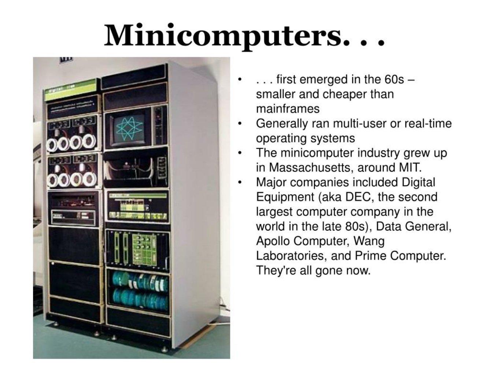
#### [Is internet everywhere?](https://www.livescience.com/20727-internet-history.html) - 1990: Tim Berners-Lee develops HyperText Markup Language (HTML). - 1994: Netscape Communications is born. Microsoft creates a Web browser for Windows 95. - 1995: The first online dating site, Match.com, launches. - 1998: The Google search engine is born. - 2004: Facebook goes online. - 2005: YouTube.com launches. - 2010: Pinterest and Instagram are launched.
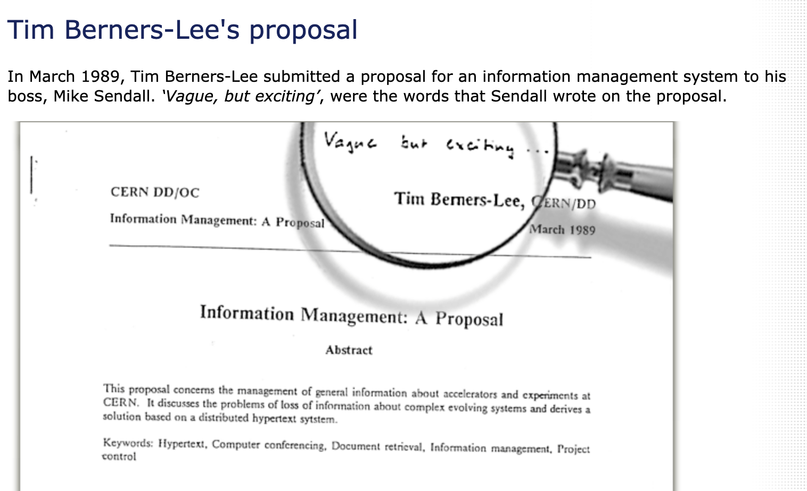
#### [Is this device for talking?](https://www.textline.com/blog/smartphone-history) - 1992: the first SMS text message was sent. It read “Merry Christmas” - 1997: The first mobile game Snake at Nokia’s 6110. - 1999 & 2000: Front facing & back facing cameras. - 2004: Live-assisted GPS. - 2007: First iPhone by Apple - 2008: First Android smartphone - 2009: Angry Birds - 2016: TikTok
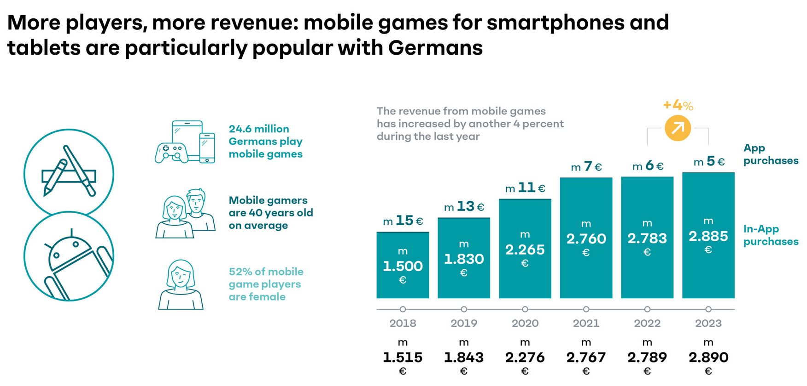
#### [Does artificial intelligence think?](https://www.tableau.com/data-insights/ai/history) - 1950-1956: Birth - 1957-1979: Maturation - 1980-1987: Boom - 1987-1993: Winter (low interest & financing) - 1993-2011: Agents / Assistants - 2020: OpenAI / GPT-3, creates content almost indistinguishable from those created by humans. - 2021: OpenAI / DALL-E, understands images enough to produce accurate captions.
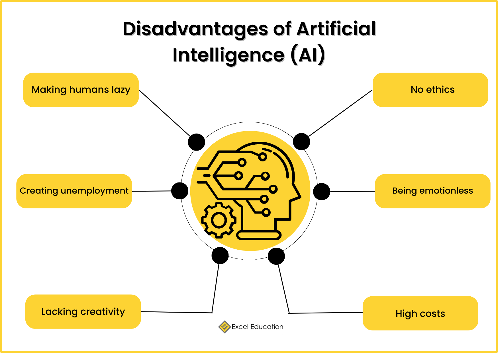
#### My career changes - Studies with terminals & mini computers (80s) - Maintenance of text based dos app (90s) - Client-server windows desktop apps (90s) - Internet: "simple" web projects (90s/00s) - Mobile: sms based applications (90s/00s) - Mobile: Android app with AI algorithms (10s) - Microservices: service platforms (10s/20s) - Embedded: Medical device with AI (20s)
#### [Food: Aromi](https://www.cgi.com/en/aromi) 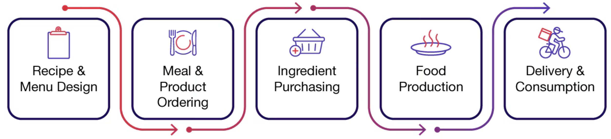 - plan food production for school, hospital, .. - compare to dietary recommendations - desktop application, no networking, local data - ca. 300 clients at that time - created mid 90s, still at wide use
#### [Aromi: Desktop application](https://www.cgi.com/en/aromi) 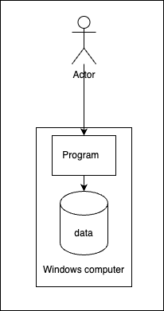 - example use-case: plan 80 diets for patients that are at hospital next week
#### [Mobile startup: esc]() 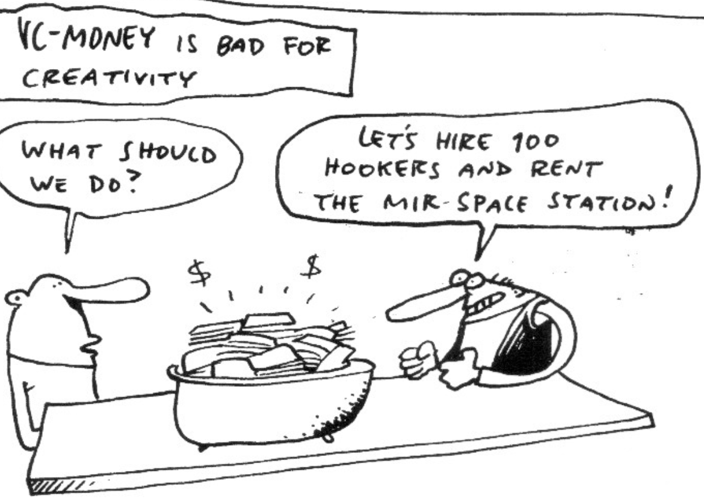 - Entertainment service center for mobile operators - App store for ringtones, icons, comics, .. - ESC developed from first version of Club Nokia - Lot of venture capital, fast growth, nice people - Hyped at late 90s / early 00s
#### [Esc: Internet / mobile service](https://www.cgi.com/en/aromi) 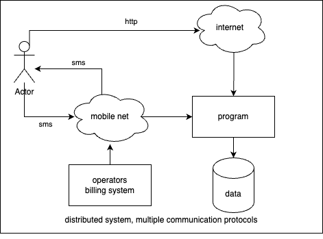 - example use-case: user composes ringtone at web based composer and sends it to own mobile phone over sms. Sending is paid as part of phone bill.
#### [Public sector: tunnistus.fi]() - Authentication service for Finnish public services - Used potentially by all private persons at Finland - banks as identity providers for their customers - Grand opening 20.1.2004 - 2011 over 15,9 mio events - used by finnish ministries - successful project: delivered in time & in budget
#### [Tunnistus: Identity federation](https://www.cgi.com/en/aromi) 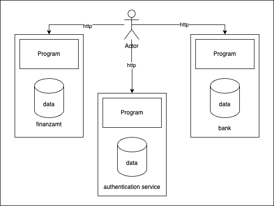 - example use-case: Tax authority redirects user to authentication server which redirects user to his bank which acts as identity provider. Works because all finns have unique id (social security number) given at birth. All Finnish banks co-operate.
#### [Tunnistus, 2004 - 2012]() 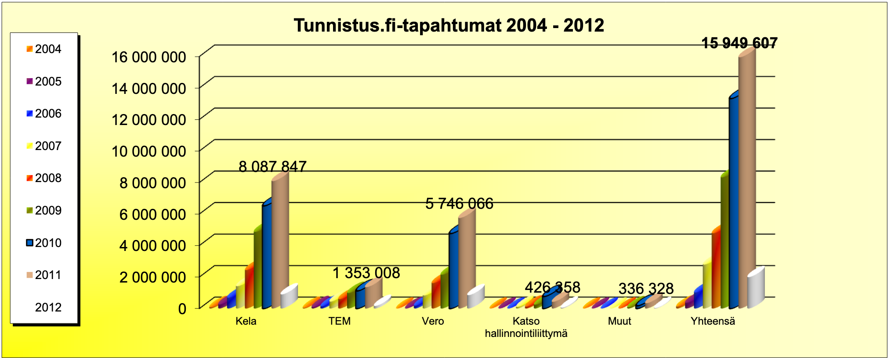 - Enabled Kela (krankenkasse) and vero (finanzamt) to automate customer facing processes
#### [Ai startup: exb / ptpt]() - Early mobile assistant - Entity recognition from all users communication - Persons, times, places, tasks - Target: 70+ languages - On device graph database + algorithms - ExB has changed business model and exist still - Early 2010s
#### [PtPt: Ai platform](https://www.cgi.com/en/aromi) 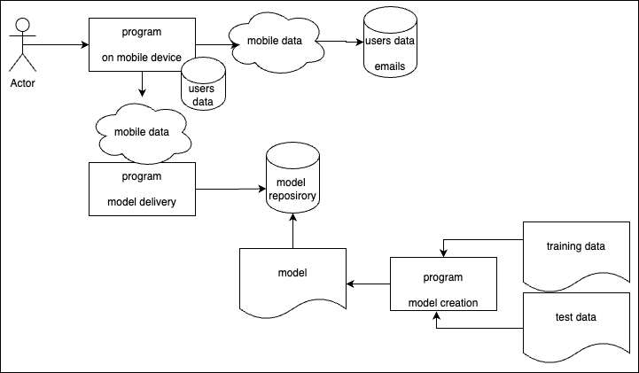 - example use-case: Users messages are scanned for entities, which can be used in mobile assistance. Model is delivered over the air to mobile device.
#### [Banking: Deutsche bank / Postbank]() - Clearing of money transactions - Input: Data from ATMs, usage of cards, .. - Data extraction, transformation and analyze - Processing of ca. 20% of German card transactions - Batch processes and administrative UIs - Lot of requirements come from regulators (Eu, ..) - Mid / Late 2010s
#### [Bank: Clearing platform](https://www.cgi.com/en/aromi) 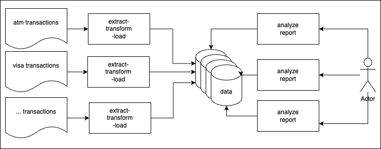 - example use-case: Transactions are validated nightly to make sure that money doesn't get lost. All information is analyzed and saved to database so that possible problems can be solved by administrators and reported further.
#### [Architectural styles]() 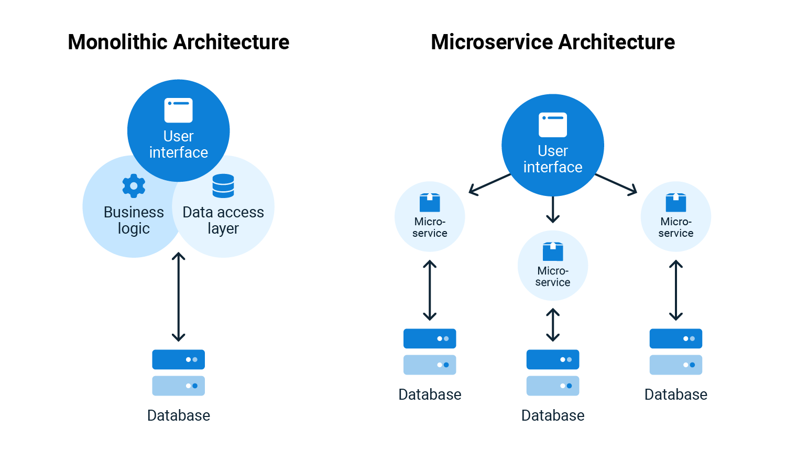 - Monoliths have single codebase and database - Microservices divide work and isolate complexity
#### [Automotive: Daimler]() - Charging platform for Electrical Vehicles (EVs) - Integration to two Daimler headunit generations - Mobile clients libraries for Ios and Android - Integrates to chargers at Europa, US and Asia - Many charging providers, interoperability challenges - Complex, so called "microservices" architecture - Late 2010s / Early 2020s
#### [Electro mobility service platform](https://www.cgi.com/en/aromi) 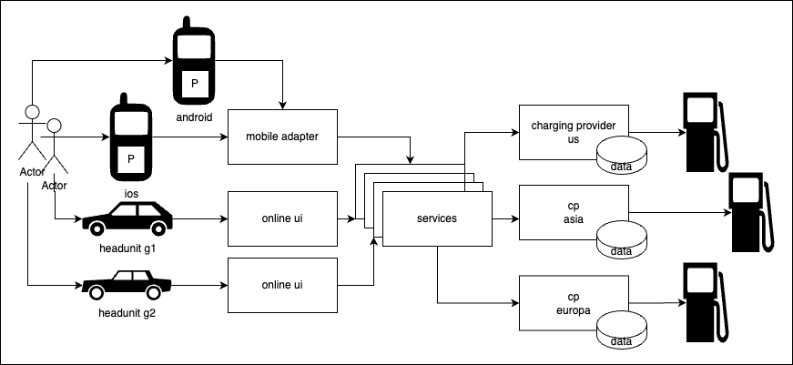 - example use-case: User plans charging stops with map at smartphone. Cars navigation systems aids to find charger. When user reaches charger, he starts and stops charging using head unit.
#### [Electro mobility service platform - emsp]() 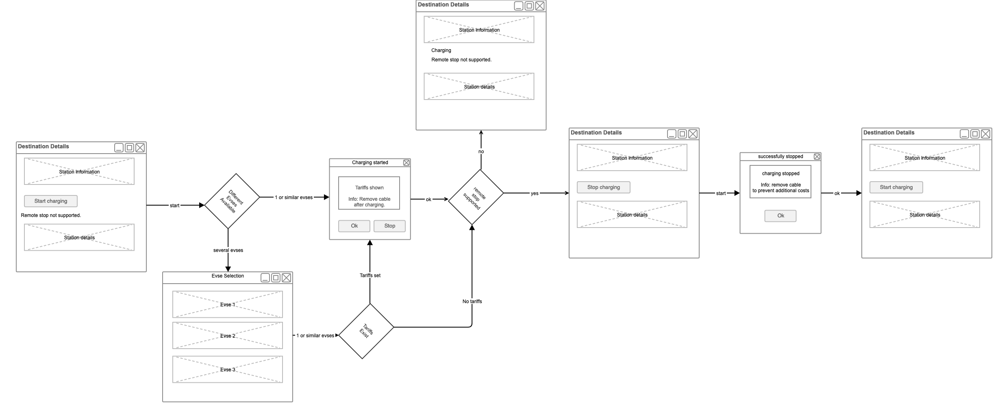 - Example flow: See charging station details (price), start charging, select plug, stop (if supported)
#### [Legal: Actaport]() - Software as service platform for law offices - Secure communication with courts (german standards: xjustiz, besondere anwaltpostfach) - Postboxes, Billing, Account management, case management, content management, .. - Tightly integrated with microsoft tools - Startup, strategy: modern web based tools - Microservices architecture - Early 2020s
#### [Legal automation]() 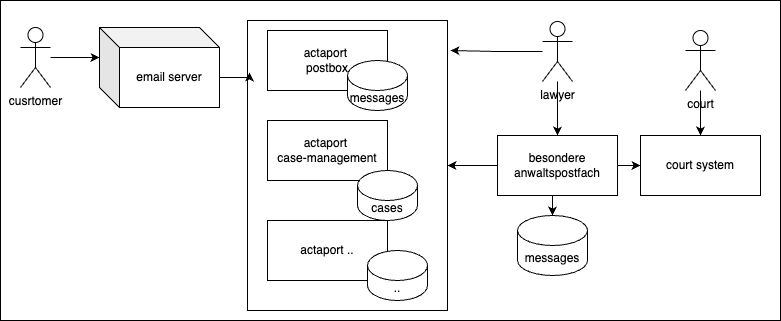 - example use-case: Lawyer receives email. Based on email lawyer sends message to court. Court answers, response is mapped to case automatically. Lawyer forwards answer to customer.
#### [Actaport]() 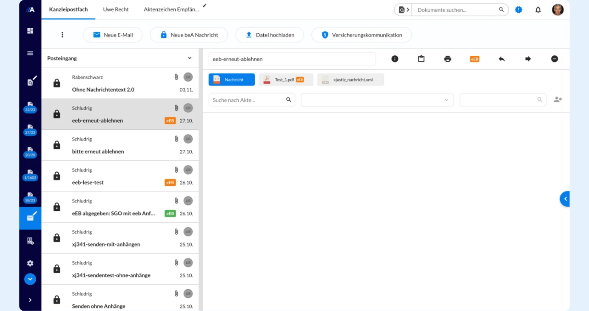 - Communicate with customers and courts (gericht), move messages to cases (akte), ..
#### [Medical devices: Humidifier]() - Humidifier for respiratory device (beatmungsgerät) - "Wasserkocher" deluxe for medical use - Class C device, malfunction may cause severe harm - If temperature is too low water condensates to lungs - Hot steam can harm skin and respiratory system - Usability testing is important part of risk reduction - Central architectural pattern - Blackboard - Project still ongoing (1/2026)
#### [Humidifier]() 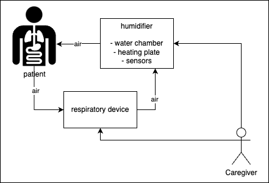 - example use-case: Patient needs intensive care for extended period. Humidifier adds moisture to breathing air. Sensors adjust power of heating plate to avoid condensation and too hot steam. When water level is too low humidifier raises alarm.
#### [Incremental innovation: Make existing better]() - Heinrich Dräger & Pulmotor over 100 years ago
#### [Design pattern: Blackboard]() 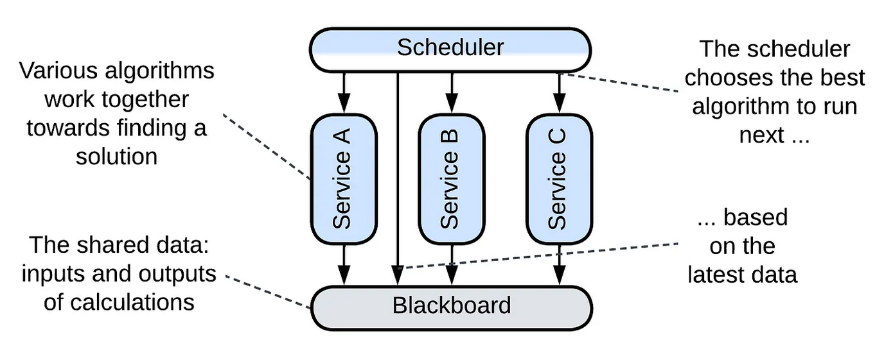 - Services read signals (temperature, water level) - Services write signals (heating power) - Schedulers coordinate execution and data access - Data is kept on blackboard (shared, global)
#### [Medical devices: Cardio diagnosis]() - Analyzes signals from hearth - Class B, Used for diagnose - Signals are analyzed with AI algorithms - Faulty diagnose can harm patient - Results sent to hospital information system - Project still ongoing (1/2026)
#### [Embedded Diagnose App]() - Measurement UI with Flutter + Dart - Runs at kiosk mode on Linux - Reads data over Bluetooth - Stores measurements to local database - Uses C++ native algorithms for analysis - Measurements and analysis results are sent to hospital information system (HIS)
#### [Medical device]() 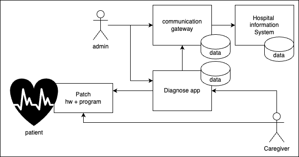 - example use-case: Nurse attaches patch to patient. Measurement is started, results are saved and sent to hospital information system. Doctors analyze data and diagnose patients condition.
## changes since I started at IT - "adidas network" => internet in pocket - desktop software => multichannel: web, mobile - few local users => global userbase - centralized systems => distributed services - own servers => rented capacity from cloud provider - small databases => data is new oil and it's huge - expensive computers => cheap disk, memory, cpus - few allrounders => specialized IT roles & people - big development projects => 1 man viral startups - expensive tools => open source, free tools
## where we are now - "Ai revolution" is hype and collects lot of money - Cloud offers companies pay per usage models - Services are integrated to form ecosystems - Technological complexity is high, but manageable - Efficiency and productivity have grown - AI changes a lot in long run, but none knows how - IT is everywhere - even Germans may give up Fax?
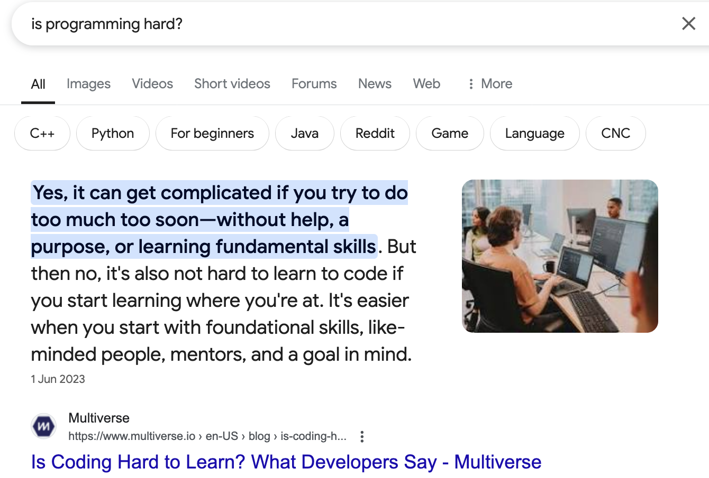
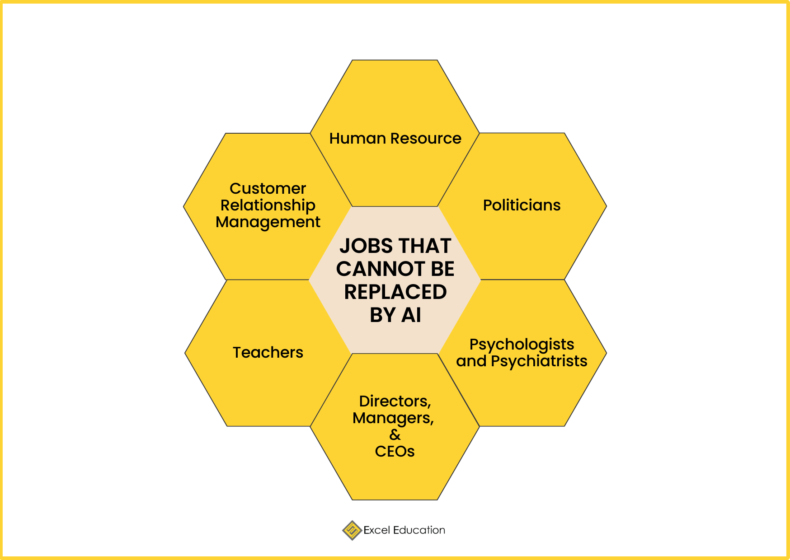